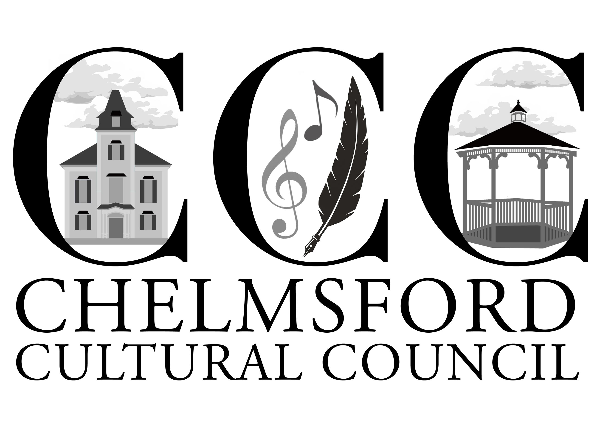

总有一种声音，能够穿越岁月，跨越山海。
对于身处海外的我们来说，戏曲不仅是一门古老的艺术，更是一种与故土相连的情感。当熟悉的旋律再次响起，当粉墨登场、丝竹和鸣，那些流淌在血脉里的文化记忆，也随着一字一句、一唱一念，悄然苏醒。
这一年，我们相聚于舞台之上，也相聚于彼此的热爱之中。从第一次排练时的生涩，到聚光灯下的从容；从一遍遍推敲唱腔、打磨身段，到一次次默契配合、共同成长，每一位演员、每一位幕后工作人员、每一位到场支持的观众，都成为了这段旅程最珍贵的一部分。
愿每一次相聚，都能让戏韵回响；愿每一次登台，都能让文化薪火相传。

本次活动由Chelmsford Cultural Council 和 Mass Cultural Council赞助